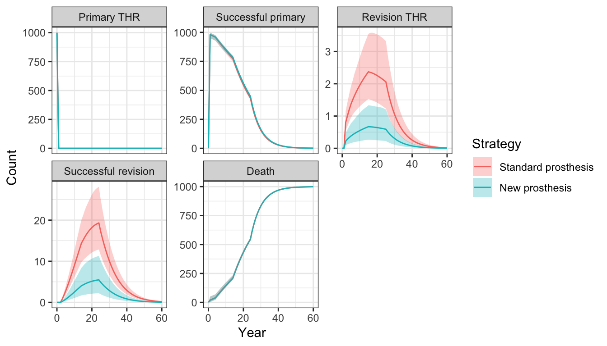

Time inhomogeneous Markov cohort models
2021-02-14
Source:vignettes/markov-inhomogeneous-cohort.Rmd
markov-inhomogeneous-cohort.RmdOverview
We will illustrate a cohort discrete time state transition model (cDTSTM) with a time inhomogeneous Markov process by replicating the total hip replacement (THR) example from the Decision Modeling for Health Economic Evaluation textbook. The analysis compares two treatment strategies, a “standard” prosthesis and a “new” prosthesis. A probabilistic sensitivity analysis (PSA) will be used to quantify parameter uncertainty.
The model consists 5 health states: (i) primary THR, (ii) successful primary, (iii) revision THR, (iv) successful revision, and (v) death.

The model is time-inhomogeneous because (i) the prosthesis survival time is modeled using a Weibull survival model so that the probability of failure is time-varying and (ii) background mortality rates increase as patients age.
As in the Simple Markov cohort model vignette, we define the model in terms of expressions with define_model(). We demonstrate an alternative approach in which we construct the transition probability matrices directly in the Appendix.
Model setup
We set up the model for two treatment strategies and 10 subgroups defined by age and sex.
library("hesim")
library("data.table")
# Treatment strategies
strategies <- data.table(strategy_id = 1:2,
strategy_name = c("Standard prosthesis", "New prosthesis"))
# Patients
ages <- seq(55, 75, 5)
age_weights <- c(.05, .1, .4, .25, .20)
sex_weights <- c(.65, .35)
weights <- rep(age_weights, times = 2) *
rep(sex_weights, each = length(ages))
patients <- data.table(patient_id = 1:10,
grp_id = 1:10,
sex = rep(c("Female", "Male"), each = length(ages)),
age = rep(ages, times = 2),
patient_wt = weights)
# Health states
states <- data.table(state_id = 1:4,
state_name = c("Primary THR", "Successful primary",
"Revision THR", "Successful revision"))
# Combined data
hesim_dat <- hesim_data(strategies = strategies,
patients = patients,
states = states)
print(hesim_dat)## $strategies
## strategy_id strategy_name
## 1: 1 Standard prosthesis
## 2: 2 New prosthesis
##
## $patients
## patient_id grp_id sex age patient_wt
## 1: 1 1 Female 55 0.0325
## 2: 2 2 Female 60 0.0650
## 3: 3 3 Female 65 0.2600
## 4: 4 4 Female 70 0.1625
## 5: 5 5 Female 75 0.1300
## 6: 6 6 Male 55 0.0175
## 7: 7 7 Male 60 0.0350
## 8: 8 8 Male 65 0.1400
## 9: 9 9 Male 70 0.0875
## 10: 10 10 Male 75 0.0700
##
## $states
## state_id state_name
## 1: 1 Primary THR
## 2: 2 Successful primary
## 3: 3 Revision THR
## 4: 4 Successful revision
##
## attr(,"class")
## [1] "hesim_data"get_labels() is used to obtain nice labels for plots and summary tables.
labs <- get_labels(hesim_dat)
print(labs)## $strategy_id
## Standard prosthesis New prosthesis
## 1 2
##
## $state_id
## Primary THR Successful primary Revision THR Successful revision
## 1 2 3 4
## Death
## 5Model parameters
Estimates from the literature
Transition probabilities
Transition probabilities from state \(i\) (rows) to state \(j\) (columns) are determined using the parameters shown in the table below:
- C: The complement of other probabilities in a given row
- omrPTHR: Operative mortality rate following primary THR
- rr: Revision rate for prosthesis
- mr: Age and sex-specific mortality rates
- omrRTHR: Operative mortality rate following revision THR
- rrr: Re-revision rate
| Primary THR | Successful primary | Revision THR | Successful revision | Death | |
|---|---|---|---|---|---|
| Primary THR | 0 | C | 0 | 0 | omrPTHR |
| Successful primary | 0 | C | rr | 0 | mr |
| Revision THR | 0 | 0 | 0 | C | omrRTHR + mr |
| Successful revision | 0 | 0 | rrr | C | mr |
| Death | 0 | 0 | 0 | 0 | 1 |
Three parameters of the transition probability matrix are assumed to be constant in the model: (i) the operative mortality rate following primary THR, omrPTHR, (ii) the operative mortality rate following revision THR, omrRTHR, and the re-revision rate, rrr. In a sample of 100 patients receiving primary THR 2 died implying that omrPTHR can be characterized by a beta distribution with \(\alpha = 2\) and \(\beta = 98\). Similarly, in a sample of 100 patients experiencing a revision procedure, four patients had another procedure within one year suggesting that rrr can be characterized by a beta distribution with \(\alpha = 4\) and \(\beta = 96\). Finally. there was information available for omrRTHR, so it assumed to follow the same beta distribution (\(\alpha = 2\) and \(\beta = 98\)) as omrPTHR.
The remaining parameters, rr and mr, are time-varying. The yearly mortality rates, mr, are stratified by age and sex.
print(mort_tbl)## age_lower age_upper male female
## 1 35 45 0.00151 0.00099
## 2 45 55 0.00393 0.00260
## 3 55 65 0.01090 0.00670
## 4 65 75 0.03160 0.01930
## 5 75 85 0.08010 0.05350
## 6 85 Inf 0.18790 0.15480Revision rates, rr, were modeled using a proportional hazards Weibull model. The scale parameter was modeled as a function of age and indicators for male sex and and whether a new prosthesis was used. That is, given a scale parameter \(\lambda\) and a shape parameter \(\gamma\), the survival function is,
\[ S(t) = \exp(-\lambda t^\gamma) \\ \lambda = \exp(\beta_0 + \beta_1 \cdot age + \beta_2 \cdot male + \beta_3 \cdot new) \\ \]
Note that this Weibull distribution corresponds to the distribution implemented in flexsurv::pweibullPH() with \(a = \gamma\) and \(m = \lambda\). It can be shown (see Appendix below) that the transition probabilities (with a one-year model cycle) are given by,
\[
1 - \exp \left\{\lambda\left[(t-1)^\gamma - t^\gamma \right] \right\}
\] The coefficients from the regression model and the variance-covariance matrix used for the PSA are stored in rr_coef and rr_vcov, respectively.
print(rr_coef)## lngamma cons age male np1
## 0.3740968 -5.4909350 -0.0367022 0.7685360 -1.3444740
print(rr_vcov)## lngamma cons age male np1
## lngamma 0.002251512 -0.00569100 2.800000e-08 0.00000510 0.0002590
## cons -0.005691000 0.04321908 -7.830000e-04 -0.00724700 -0.0006420
## age 0.000000028 -0.00078300 2.715661e-05 0.00003300 -0.0001110
## male 0.000005100 -0.00724700 3.300000e-05 0.01189539 0.0001840
## np1 0.000259000 -0.00064200 -1.110000e-04 0.00018400 0.1463686Utility
The mean (standard error) of utility was estimated to be 0.85 (0.03), 0.30 (0.03), and 0.75 (0.04) in the successful primary, revision, and successful revision health states, respectively.
Costs
The largest costs are the cost of the prostheses themselves. The standard prosthesis costs \(£394\) while the new prosthesis costs \(£579\). Both are assumed to be known with certainty.
The model assumes that there are no ongoing medical costs. The only remaining cost is therefore the cost of the revision procedure, which was estimated to have a mean of \(£5,294\) and standard error of \(£1,487\).
Combining all parameters
All underlying parameter estimates are stored in a list.
params <- list(
# Transition probabilities
## Operative mortality following primary THR
omrPTHR_shape1 = 2,
omrPTHR_shape2 = 98,
## Revision rate for prosthesis
rr_coef = rr_coef,
rr_vcov = rr_vcov,
## Mortality_rates
mr = mort_tbl,
## Operative mortality following revision THR
omrRTHR_shape1 = 2,
omrRTHR_shape2 = 98,
## re-revision rate
rrr_shape1 = 4,
rrr_shape2 = 96,
# Utility
u_mean = c(PrimaryTHR = 0, SuccessP = .85, Revision = .30, SuccessR = .75),
u_se = c(PrimaryTHR = 0, SuccessP = .03, Revision = .03, SuccessR = .04),
# Costs
c_med_mean = c(PrimaryTHR = 0, SuccessP = 0, Revision = 5294, SuccessR = 0),
c_med_se = c(PrimaryTHR = 0, SuccessP = 0, Revision = 1487, SuccessR = 0),
c_Standard = 394,
c_NP1 = 579
)Random number generation
As noted above, omrPTHR, omrRTHR, and rrr are drawn from beta distributions with \(\alpha\) and \(\beta\) (i.e. shape1 and shape2) specified. Similarly, utility is drawn from a beta distribution, but shape1 and shape2 are derived from the mean and standard error using the method of moments. The mortality rate and the cost of the prostheses are assumed to be known with certainty. The medical costs associated with health states are drawn from a gamma distribution, for which, like utility, the underlying parameters are derived from the mean and standard error using the method of moments. Finally, the parameters of the Weibull survival model are drawn from a multivariate normal distribution using the point estimates and the variance-covariance matrix. 500 samples will be drawn for the PSA.
rng_def <- define_rng({
list(
omrPTHR = beta_rng(shape1 = omrPTHR_shape1, shape2 = omrPTHR_shape2),
rr_coef = multi_normal_rng(mu = rr_coef, Sigma = rr_vcov),
mr_male = fixed(mr$male, names = mr$age_lower),
mr_female = fixed(mr$female, names = mr$age_lower),
omrRTHR = beta_rng(shape1 = omrRTHR_shape1, shape2 = omrRTHR_shape2),
rrr = beta_rng(shape1 = rrr_shape1, shape2 = rrr_shape2),
u = beta_rng(mean = u_mean, sd = u_se),
c_med = gamma_rng(mean = c_med_mean, sd = c_med_se),
c_Standard = c_Standard,
c_NP1 = c_NP1
)
}, n = 500)Transformed parameters
The sampled parameter values are “transformed” as a function of input data, which consists of all treatment strategy and patient combinations.
## strategy_id patient_id strategy_name grp_id sex age patient_wt
## 1: 1 1 Standard prosthesis 1 Female 55 0.0325
## 2: 1 2 Standard prosthesis 2 Female 60 0.0650
## 3: 1 3 Standard prosthesis 3 Female 65 0.2600
## 4: 1 4 Standard prosthesis 4 Female 70 0.1625
## 5: 1 5 Standard prosthesis 5 Female 75 0.1300
## 6: 1 6 Standard prosthesis 6 Male 55 0.0175When evaluating the define_tparams() expression, operations are vectorized and performed for each combination of the sampled parameters, input data, and time periods. The model will be simulated for 60 model cycles (i.e., 60 years) so we will create 60 time intervals of length 1.
Separate transformation functions are used for the transition model and the cost/utility models. This is done for computational efficiency since only the transition model depends on cycle time. In the transition model, the revision rate (rr) depends on the scale and the shape parameters, which, in turn, depend on the sampled values of the parameters from the Weibull model. The mortality rate depends on sex and a patient’s age during each model cycle.
transitions_def <- define_tparams({
# Regression for revision risk
male <- ifelse(sex == "Female", 0, 1)
np1 <- ifelse(strategy_name == "Standard prosthesis", 0, 1)
scale <- exp(rr_coef$cons + rr_coef$age * age + rr_coef$male * male +
rr_coef$np1 * np1)
shape <- exp(rr_coef$lngamma)
rr <- 1 - exp(scale * ((time - 1)^shape - time^shape))
# Mortality rate
age_new <- age + time
mr <- mr_female[["35"]] * (sex == "Female" & age_new >= 35 & age_new < 45) +
mr_female[["45"]] * (sex == "Female" & age_new >= 45 & age_new < 55) +
mr_female[["55"]] * (sex == "Female" & age_new >= 55 & age_new < 65) +
mr_female[["65"]] * (sex == "Female" & age_new >= 65 & age_new < 75) +
mr_female[["75"]] * (sex == "Female" & age_new >= 75 & age_new < 85) +
mr_female[["85"]] * (sex == "Female" & age_new >= 85) +
mr_male[["35"]] * (sex == "Male" & age_new >= 35 & age_new < 45) +
mr_male[["45"]] * (sex == "Male" & age_new >= 45 & age_new < 55) +
mr_male[["55"]] * (sex == "Male" & age_new >= 55 & age_new < 65) +
mr_male[["65"]] * (sex == "Male" & age_new >= 65 & age_new < 75) +
mr_male[["75"]] * (sex == "Male" & age_new >= 75 & age_new < 85) +
mr_male[["85"]] * (sex == "Male" & age_new >= 85)
list(
tpmatrix = tpmatrix(
0, C, 0, 0, omrPTHR,
0, C, rr, 0, mr,
0, 0, 0, C, omrRTHR + mr,
0, 0, rrr, C, mr,
0, 0, 0, 0, 1)
)
}, times = 1:60)
statevals_def <- define_tparams({
c_prosthesis <- ifelse(strategy_name == "Standard prosthesis",
c_Standard,
c_NP1)
list(
utility = u,
costs = list(
prosthesis = c_prosthesis,
medical = c_med
)
)
})Simulation
Constructing the economic model
The economic model is defined by specifying parameter estimates, a random number generation expression for the PSA, and the transformed parameter expressions.
mod_def <- define_model(tparams_def = list(transitions_def,
statevals_def),
rng_def = rng_def,
params = params)The economic model is then created from the input data and the defined model. Arguments for instantiating the cost models (a list of objects of class StateVals) can be specified with a named list containing the values of arguments to pass to StateVals$new(). In this case, we note that the model for the cost of the prostheses is based on one-time costs accrued at the start of the model (with no discounting); conversely, medical costs accrue by weighting state values by time spent in the health states (in the current model simply the cost of revision over 1 year).
cost_args <- list(
prosthesis = list(method = "starting"),
medical = list(method = "wlos")
)
econmod <- create_CohortDtstm(mod_def, input_data,
cost_args = cost_args)Health state probabilities
Health state probabilities are simulated for 60 model cycles.
econmod$sim_stateprobs(n_cycles = 60)The expected number of patients per 1,000 in each health state is plotted below. The counts in the plot are for patient_id = 2, a 60 year old female as in the original textbook example. Since a PSA was performed both mean values and 95 percent credible intervals can be displayed. Patients are more likely to have a revision with a standard prosthesis than with the new prosthesis.

Costs and QALYs
To again be consistent with the textbook example, QALYs and costs are simulated with discount rates of .015 and 0.06, respectively. QALYs and costs (when method = "wlos") are computed with a right Riemann sum, meaning that they are measured at the right endpoint of each model cycle.
econmod$sim_qalys(dr = .015, integrate_method = "riemann_right")
econmod$sim_costs(dr = .06, integrate_method = "riemann_right")Decision analysis
Subgroup analysis
Subgroup analyses can be performed with $summarize() using the by_grp = TRUE option. Cost-effectiveness analyses are then performed for each subgroup (grp_id) from input data. We will begin by reporting summary results using summary.ce() for the 60-year old female, which are consistent with those from the textbook.
ce_sim <- econmod$summarize(by_grp = TRUE)
wtp <- seq(0, 25000, 500)
cea_pw_out <- cea_pw(ce_sim, comparator = 1, dr_qalys = 0.015, dr_costs = .06,
k = wtp)
summary(ce_sim, labels = labs)[grp == 2] %>%
format()## Discount rate Outcome Standard prosthesis New prosthesis
## 1: 0.015 QALYs 14.64 (13.56, 15.71) 14.69 (13.60, 15.76)
## 2: 0.060 Costs: prosthesis 394 (394, 394) 579 (579, 579)
## 3: 0.060 Costs: medical 116 (52, 222) 33 (10, 78)
## 4: 0.060 Costs: total 510 (446, 616) 612 (589, 657)We can then compute incremental cost-effectiveness ratios for each subgroup. There is considerable variation which is not unexpected since the the revision rate for prostheses (rr) depends on covariates.
## Group Strategy Incremental QALYs Incremental costs Incremental NMB
## 1: 1 2 0.07 (0.03, 0.13) 70 (-38, 135) 3,566 (1,416, 6,648)
## 2: 2 2 0.04 (0.02, 0.08) 102 (23, 150) 2,145 (838, 4,089)
## 3: 3 2 0.03 (0.01, 0.05) 128 (71, 161) 1,214 (424, 2,433)
## 4: 4 2 0.02 (0.01, 0.03) 146 (108, 169) 626 (172, 1,336)
## 5: 5 2 0.01 (0.00, 0.02) 160 (135, 175) 275 (18, 700)
## 6: 6 2 0.12 (0.05, 0.21) -23 (-225, 92) 5,786 (2,485, 10,524)
## 7: 7 2 0.07 (0.03, 0.13) 38 (-111, 122) 3,460 (1,463, 6,486)
## 8: 8 2 0.04 (0.02, 0.08) 84 (-17, 143) 1,966 (801, 3,841)
## 9: 9 2 0.02 (0.01, 0.04) 118 (51, 158) 1,049 (387, 2,163)
## 10: 10 2 0.01 (0.01, 0.02) 142 (97, 168) 509 (129, 1,146)
## ICER
## 1: 962
## 2: 2,276
## 3: 4,753
## 4: 9,476
## 5: 18,406
## 6: Dominates
## 7: 538
## 8: 2,057
## 9: 5,068
## 10: 10,926Overall
Estimates aggregated across all patients can also be computed with $sim_summarize() by using by_grp = FALSE. In this case, overall costs and QALYs are a weighted average (using the column patient_wt) of costs and QALYs for each patient in the input data.
ce_sim <- econmod$summarize(by_grp = FALSE)
cea_pw_out <- cea_pw(ce_sim, comparator = 1, dr_qalys = .015, dr_costs = .06,
k = wtp)
icer(cea_pw_out, labels = labs) %>%
format(digits_qalys = 3)## Outcome New prosthesis
## 1: Incremental QALYs 0.029 (0.013, 0.054)
## 2: Incremental costs 120 (58, 158)
## 3: Incremental NMB 1,333 (503, 2,601)
## 4: ICER 4,119Appendix
Transition probabilities from a Weibull survival model
In general, the transition probability of an event for a given model cycle is one minus the probability a patient does not have an event during the cycle conditional on not having an event up until that cycle. That is, given a survivor function, \(S(t)\) and a cycle of length \(u\), the transition probability, \(tp(t_u)\) of an event is,
\[ \begin{align} tp(t_u) &= 1 - \frac{S(t)}{S(t-u)} \\ &= 1 - \frac{exp\{-H(t)\}}{exp\{-H(t-u)\}} \\ &= 1 - exp\{H(t-u) - H(t)\}, \end{align} \]
where \(H(t)\) is the cumulative hazard function.
The proportional hazard Weibull distribution with scale parameter \(\lambda\) and shape parameter, \(\gamma\) has the cumulative hazard function,
\[ H(t) = \lambda t^\gamma \] The transition probability of an event for the Weibull model is thus,
\[ \begin{align} tp(t_u) &= 1 - exp\{\lambda (t-u)^\gamma -\lambda t^\gamma\} \\ &= 1 - exp\{\lambda[(t-u)^\gamma - t^\gamma]\} \end{align} \]
Direct construction of transition matrices
Transition probability matrices can also be constructed without using define_model(). One way to do this is to construct the transition probability matrices using matrix algebra. That is, for a given sample of the parameters from the PSA, we can predict the element for the \(r\)th row and \(s\)th column as \(p_{rs} = g(x^T\theta)\) where \(x\) is an input matrix, \(\theta\) is a vector of coefficients (i.e., a parameter sample), and \(g()\) is a transformation function. An input matrix will always vary by treatment strategy and patient; in a time-inhomogeneous model, it will vary by time period as well. This approach is more computationally efficient than defining a model because define_model() is a general function, resulting in some overhead.
Random number generation
To get started, we sample the parameters for the PSA using eval_rng().
params_rng <- eval_rng(rng_def, params = params)Input data
We then create input data and add a few variables needed to construct the input matrices. Note that the variable age_new reflects a patients’ age as a function of time in the model.
# Create new variables
tpmatrix_data <- expand(hesim_dat, by = c("strategies", "patients"),
times = 1:60)
tpmatrix_data[, time_stop := ifelse(is.infinite(time_stop), 61, time_stop)]
tpmatrix_data[, male := ifelse(sex == "Male", 1, 0)]
tpmatrix_data[, np1 := ifelse(strategy_name == "New prosthesis", 1, 0)]
tpmatrix_data[, age_new := age + time_stop]
tpmatrix_data[, cons := 1]Different input matrices are constructed using the input data for different elements of the transition probability matrix. Some of the parameters aren’t a function of any patient characteristics or time and can therefore be predicted using a matrix with a single column of ones. A separate matrix is needed for the revision rate given the covariates in the Weibull survival model.
x_cons <- as.matrix(tpmatrix_data$cons)
x_rr <- as.matrix(tpmatrix_data[, .(cons, age, male, np1)])
head(x_cons)## [,1]
## [1,] 1
## [2,] 1
## [3,] 1
## [4,] 1
## [5,] 1
## [6,] 1
head(x_rr)## cons age male np1
## [1,] 1 55 0 0
## [2,] 1 55 0 0
## [3,] 1 55 0 0
## [4,] 1 55 0 0
## [5,] 1 55 0 0
## [6,] 1 55 0 0As in our define_model() block above, predicting the mortality rate is a little more cumbersome. One way to do it is to create dummy variables for each age and sex category. To do this it’s helpful to reshape the mortality table above to a longer format.
print(mort_tbl2)## age_lower age_upper sex age_sex rate
## 1: 35 45 Female Female_35_45 0.00099
## 2: 45 55 Female Female_45_55 0.00260
## 3: 55 65 Female Female_55_65 0.00670
## 4: 65 75 Female Female_65_75 0.01930
## 5: 75 85 Female Female_75_85 0.05350
## 6: 85 Inf Female Female_85_Inf 0.15480
## 7: 35 45 Male Male_35_45 0.00151
## 8: 45 55 Male Male_45_55 0.00393
## 9: 55 65 Male Male_55_65 0.01090
## 10: 65 75 Male Male_65_75 0.03160
## 11: 75 85 Male Male_75_85 0.08010
## 12: 85 Inf Male Male_85_Inf 0.18790We can write a short function to create a matrix of dummy variables.
create_age_sex_dummies <- function(data, mort_tbl) {
x <- matrix(0, nrow = nrow(data), ncol = nrow(mort_tbl2))
colnames(x) <- mort_tbl2$age_sex
for (i in 1:nrow(mort_tbl2)) {
x[, i] <- ifelse(data$sex == mort_tbl2[i]$sex &
data$age_new >= mort_tbl2[i]$age_lower &
data$age_new < mort_tbl2[i]$age_upper,
1, 0)
}
return(x)
}
x_age_sex <- create_age_sex_dummies(tpmatrix_data, mort_tbl2)
head(x_age_sex)## Female_35_45 Female_45_55 Female_55_65 Female_65_75 Female_75_85
## [1,] 0 0 1 0 0
## [2,] 0 0 1 0 0
## [3,] 0 0 1 0 0
## [4,] 0 0 1 0 0
## [5,] 0 0 1 0 0
## [6,] 0 0 1 0 0
## Female_85_Inf Male_35_45 Male_45_55 Male_55_65 Male_65_75 Male_75_85
## [1,] 0 0 0 0 0 0
## [2,] 0 0 0 0 0 0
## [3,] 0 0 0 0 0 0
## [4,] 0 0 0 0 0 0
## [5,] 0 0 0 0 0 0
## [6,] 0 0 0 0 0 0
## Male_85_Inf
## [1,] 0
## [2,] 0
## [3,] 0
## [4,] 0
## [5,] 0
## [6,] 0Transformed parameters
With input matrices in hand, we can transform the parameter samples to construct a tparams_transprobs() object, which contains all the predicted transition probabilities needed for simulation. These objects are most easily constructed using tpmatrix() and tpmatrix_id() objects. We will start with tpmatrix_id() which contains the ID variables for each transition probability matrix in tparams_transprobs() objects.
tpmat_id <- tpmatrix_id(tpmatrix_data, 500)
head(tpmat_id)## sample strategy_id patient_id grp_id patient_wt time_id time_start time_stop
## 1: 1 1 1 1 0.0325 1 0 1
## 2: 1 1 1 1 0.0325 2 1 2
## 3: 1 1 1 1 0.0325 3 2 3
## 4: 1 1 1 1 0.0325 4 3 4
## 5: 1 1 1 1 0.0325 5 4 5
## 6: 1 1 1 1 0.0325 6 5 6tpmatrix() produces a transition probability matrix for each row of tpmatrix_id. We predict the elements of the matrix using the input matrices we derived above. Matrix multiplication of an \(n \times k\) input matrix by a \(k \times s\) coefficient matrix results in a \(n \times s\) matrix of predicted values. In other words, there is one row for each of the \(n\) rows in the input data and one column for each of the \(s\) parameter samples. This matrix can itself be flattened into a vector of length \(n \cdot s\) using the c() function. The result is a vector of predicted values stacked by parameter sample; that is, a prediction for each row produced by tpmatrix_id().
# "Transformed" parameters
time <- tpmat_id$time_stop
omrPTHR <- c(x_cons %*% params_rng$omrPTHR)
omrRTHR <- omrPTHR
rr_scale <- exp(c(x_rr %*% t(params_rng$rr_coef[, -1])))
rr_shape <- exp(c(x_cons %*% params_rng$rr_coef$lngamma))
rr <- 1 - exp(rr_scale * ((time - 1)^rr_shape - time^rr_shape))
mr <- c(x_age_sex %*% t(cbind(params_rng$mr_female, params_rng$mr_male)))
rrr <- c(x_cons %*% params_rng$rrr)
# Transition probability matrix
tpmat <- tpmatrix(
0, C, 0, 0, omrPTHR,
0, C, rr, 0, mr,
0, 0, 0, C, omrRTHR + mr,
0, 0, rrr, C, mr,
0, 0, 0, 0, 1
)
tpmat[1, ]## s1_s1 s1_s2 s1_s3 s1_s4 s1_s5 s2_s1 s2_s2 s2_s3 s2_s4
## 1: 0 0.9956683 0 0 0.00433169 0 0.9927122 0.0005877613 0
## s2_s5 s3_s1 s3_s2 s3_s3 s3_s4 s3_s5 s4_s1 s4_s2 s4_s3
## 1: 0.0067 0 0 0 0.9889683 0.01103169 0 0 0.06646916
## s4_s4 s4_s5 s5_s1 s5_s2 s5_s3 s5_s4 s5_s5
## 1: 0.9268308 0.0067 0 0 0 0 1Finally, we combine the ID variables and the transition probability matrices into a single object.
tparams_transprobs <- tparams_transprobs(tpmat, tpmat_id)Simulation
To compare with the define_model() approach, we will (re)construct and (re)simulate the model. Estimated costs and QALYs are very similar, as expected.
transmod <- CohortDtstmTrans$new(params = tparams_transprobs)
econmod$trans_model <- transmod
econmod$sim_stateprobs(n_cycles = 60)
econmod$sim_qalys(dr = .015, integrate_method = "riemann_right")
econmod$sim_costs(dr = .06, integrate_method = "riemann_right")
ce_sim <- econmod$summarize(by_grp = TRUE)
summary(ce_sim, labels = labs)[grp == 2] %>%
format()## Discount rate Outcome Standard prosthesis New prosthesis
## 1: 0.015 QALYs 14.65 (13.52, 15.69) 14.69 (13.55, 15.74)
## 2: 0.060 Costs: prosthesis 394 (394, 394) 579 (579, 579)
## 3: 0.060 Costs: medical 115 (53, 211) 32 (10, 78)
## 4: 0.060 Costs: total 509 (447, 605) 611 (589, 657)However, time to construct the transition model was 2.6 times faster. Although both are quite fast (time in the table is in seconds), this difference would become more pronounced as the number of parameter samples, treatment strategies, patients, and/or distinct time periods increased.
data.table(
Method = c("define_model()", "Custom tpmatrix()"),
rbind(
run_time1[1:3],
run_time2[1:3]
)
) %>%
kable() %>%
kable_styling()| Method | user.self | sys.self | elapsed |
|---|---|---|---|
| define_model() | 4.276 | 0.887 | 5.444 |
| Custom tpmatrix() | 1.638 | 0.417 | 2.088 |